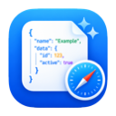

You can turn on JSON Viewer’s extension in Safari Extensions preferences.
JSON Viewer’s extension is currently on. You can turn it off in Safari Extensions preferences.
JSON Viewer’s extension is currently off. You can turn it on in Safari Extensions preferences.